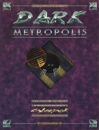

|  | Technical data |
| Supplement for the role-playing game Cyberpunk 2020, published by Ianus Games (Dream Pod 9) (1994) | |
| Theme | Alternate Reality : Cyberpunk even creepier |
| Background quality | 5 / 5 |
| Scenario quality | 4 / 5 |
| Rules quality | 4 / 5 |
| Artworks quality | 4 / 5 |
| Writing quality | 5 / 5 |
Ianus Games continues its range of Alternate Realities. Once again we find ideas to deal with family life, stress and mental disorders, equipment malfunctions, everyday spying, illegal radios, parties, natural disasters, heat waves, demonstrations and riots, some new character archetypes. There are also inspirations for creating playgrounds (asylums, drug bars, enclaves), and introducing slightly hotter topics : drugs, near-death experiences, emotional rock, sex industry, slavery, virtual pleasures. We'll also have enough to make synthetic animals. There follows a simple but good quality scenario "The Imp of the Perverse", on the subject of mental manipulation. This supplement is of very good quality, a must.
{kind=link}